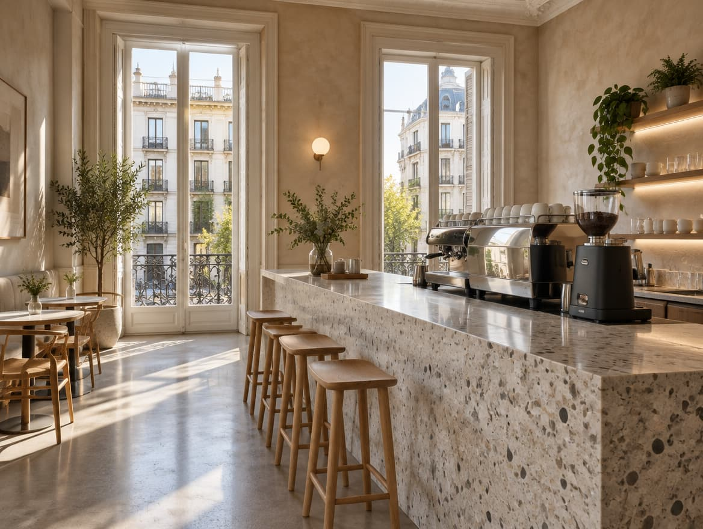
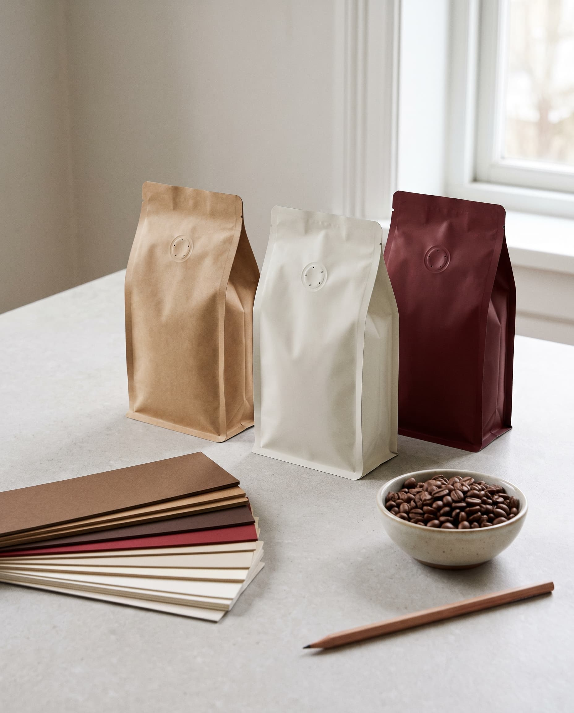
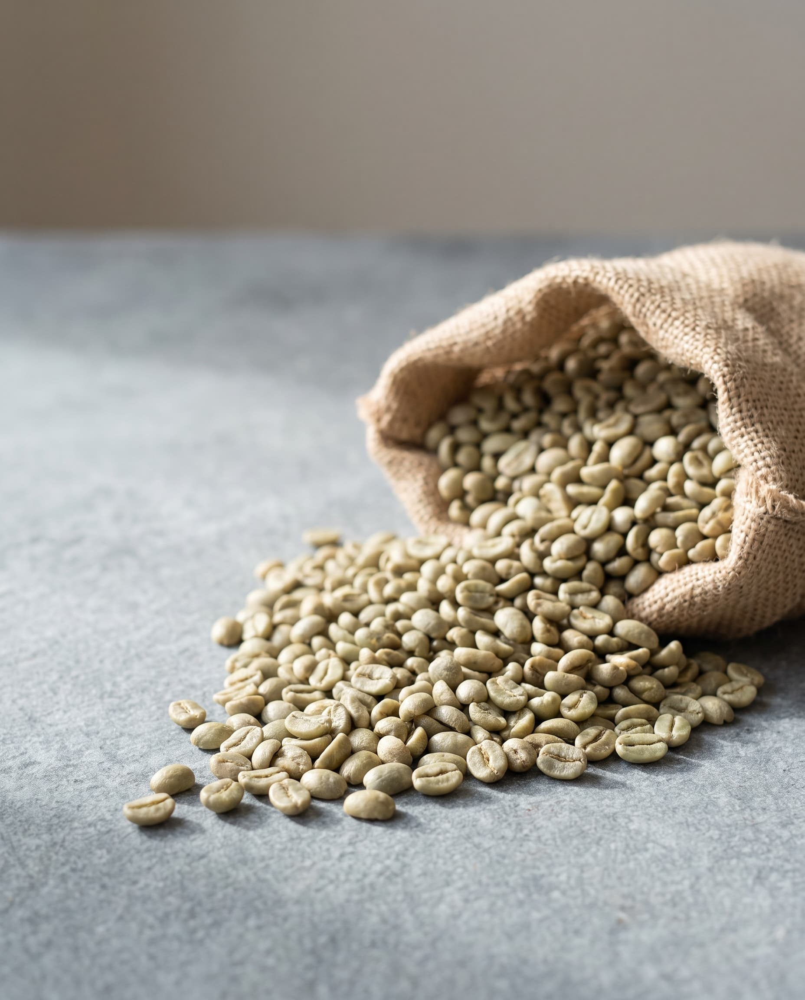
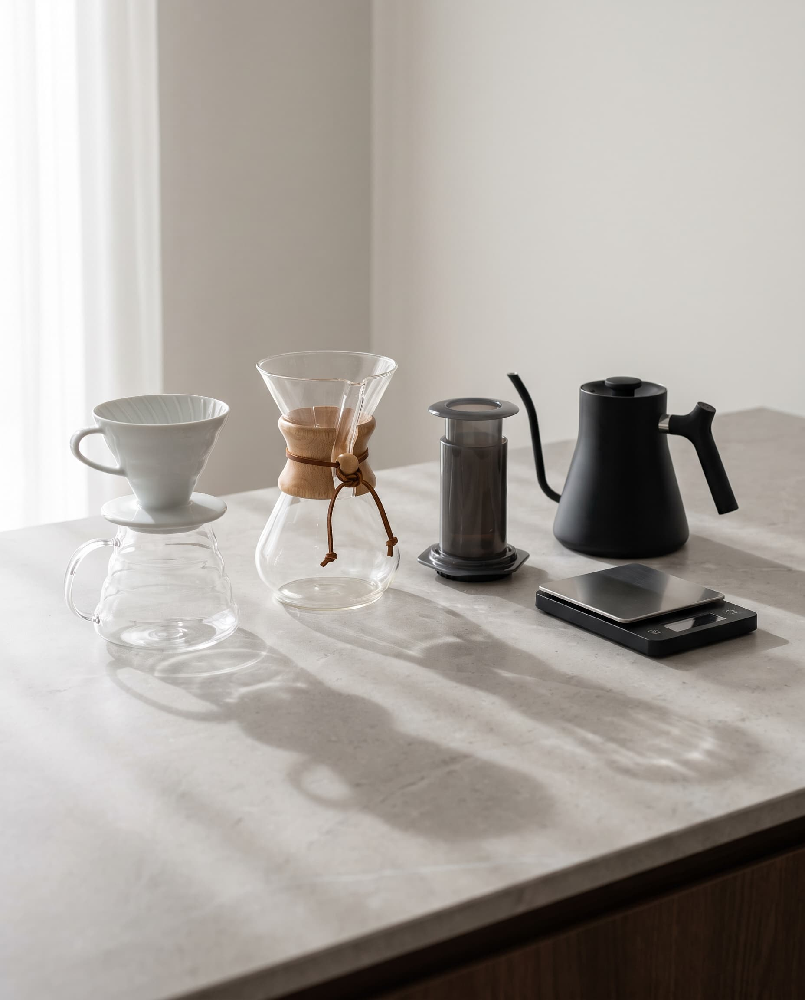
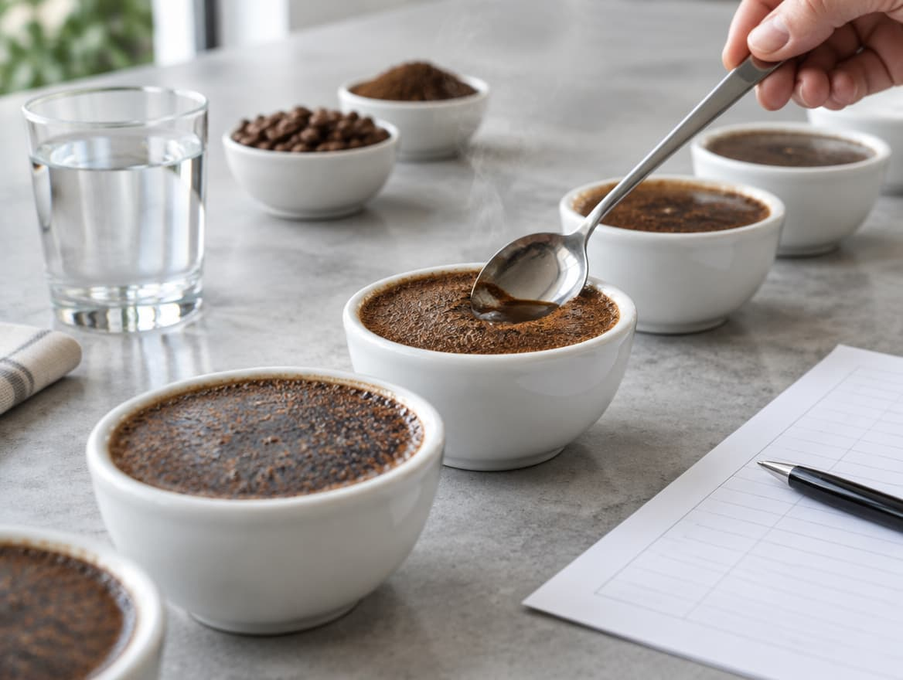
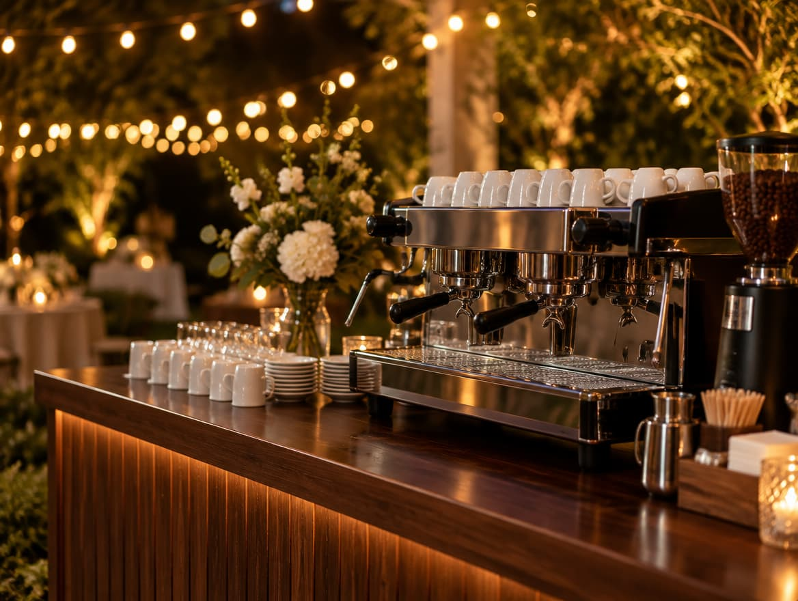

01 / 08
Abrir tu cafetería de especialidad
Para emprendedores
Te acompañamos desde la idea hasta el primer café servido.
- Concepto, público y carta
- Elección de equipo: máquina, molinos y agua
- Proveedores de café y plan de compras
- Formación del equipo antes de abrir

02 / 08
Crea tu marca de café
Para marcas nuevas
Lanza tu propio café con criterio de especialidad.
- Selección de orígenes y perfiles de tueste
- Fichas de cata y descripción de cada café
- Packaging, formatos y precio
- Posicionamiento y lanzamiento

03 / 08
Café verde de especialidad
Para tostadores
Lotes de origen trazable para tostar con confianza.
- Muestra y ficha de cata antes de comprar
- Origen, altitud, variedad y proceso de cada lote
- Volúmenes adaptados a tu tostadero
- Precio bajo presupuesto

04 / 08
Café tostado para tu negocio
Para cafeterías, hoteles y oficinas
Café recién tostado, a la medida de tu carta.
- Perfil de tueste según tu máquina y tu cliente
- Entregas periódicas
- Calibración inicial en tu barra
- Precio bajo presupuesto
05 / 08
Curso de tueste y talleres de cata
Próximamente
Para profesionales y curiosos
Aprende a tostar y a catar como un profesional.
- Fundamentos de tueste en tostadora profesional
- Lectura de curvas y perfiles
- Cata con el protocolo de la SCA
- Grupos reducidos y sesiones privadas para empresas
06 / 08
Formación en métodos de preparación
Para baristas y cafeterías
Que cada taza salga igual de bien, todos los días.
- Espresso: dosis, molienda y tiempo
- Filtro: V60, Chemex y AeroPress
- Leche y textura
- Control de calidad diario

07 / 08
Asesoría de origen
Para tostadores y marcas
Compra mejor: qué orígenes elegir y cómo evaluarlos.
- Selección de orígenes según tu cliente
- Evaluación de muestras en cata
- Trazabilidad y documentación
- Logística hasta tu tostadero

08 / 08
Barra de café para eventos
Para empresas y celebraciones
Café de especialidad servido por baristas en tu evento.
- Barra completa con espresso y filtro
- Baristas profesionales
- Bodas, ferias, presentaciones y eventos de empresa
- Presupuesto según número de invitados
